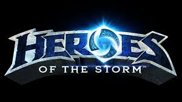
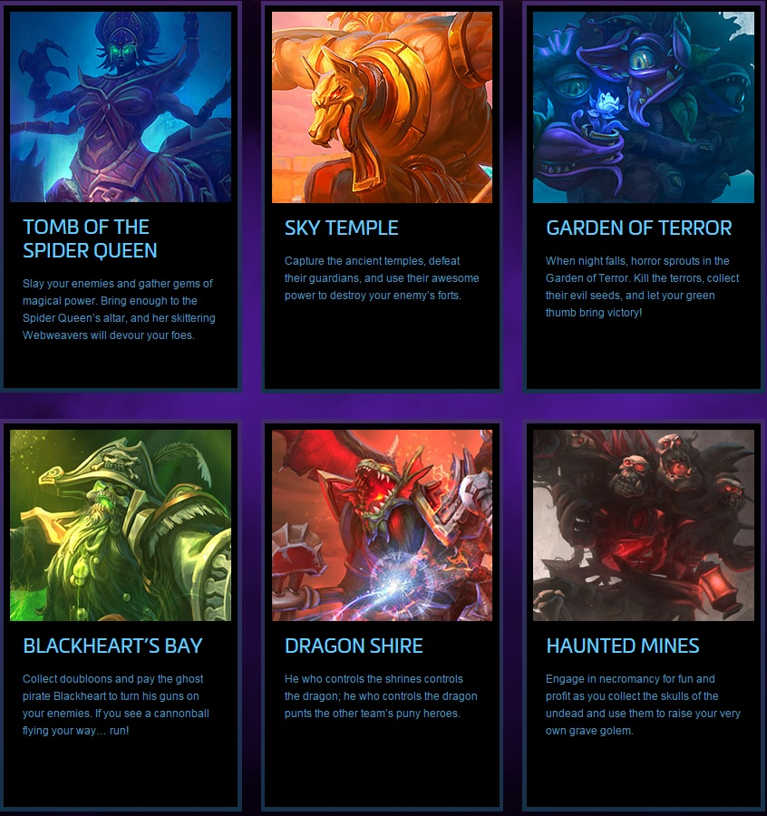
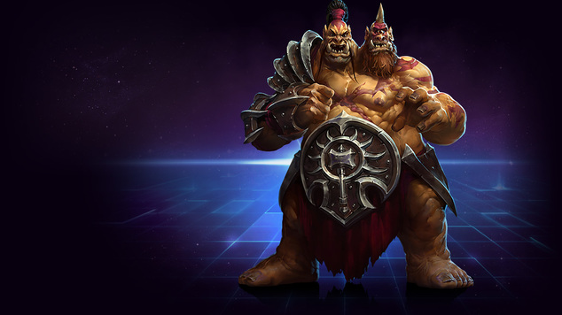

<
LoL vs HoTS
Luke

What is Heros of the Storm
Heros of the Storm aka HotS is a Moba (multiplayer online battle arena) game made by Blizzard Entertainment. It's a mash of ever Blizzard property Warcraft, Starcraft, Diablo and now Overwatch duking it out in like League of Legends. League may have come well before Hots but this isn't saying that is better or worce with most MOBAs on the market at the moment they are conesently updated getting about 2 to 3 times a month adding charaters, bug fixes and balancing to make the game fresh and consently changing to keep the game fresh. So whats the difference and why do they matter?

The differences
One very noticable thing that seperate HoTs and LOL are the maps; in LOL there is primaraly only the one map to learn and master, where Hots has 7 in current rotation and 13 over all and is always growing. Well does that mean and why does it matter because having more isn't always better in this case it adds a higher skill level and the ablily to make more unique champions and thats never a bad thing. Even if League only has one map they have Balanaced it almost flawlessly.

this brings us to the champions or heros that you play as in either game, what makes them differnt? Hots brings in charaters from differnt propertys that Blizzard owns and league of legends comes up with wholy new charaters and both a great! I'll even amit some of League's champions are crazy cool to play and from an artist stand point but there's somthing about playing as charaters you've grown up seeing grow in power from a far in other games and beingable to finally being able to play as them for your self. For example the Lich King a charater of mythic proportions being seen in Warcraft 3 and reamerging again in World of warcraft years later as a end game boss; it was truly a blast to bring doom to who all stand in your way as this mythic charater.
The Art
one of the things that both makes the games make money is Skins for your charaters witch both can be either payied for or earned by just playing the game. Hots being a mash up game makes the skin combos that come be from darn out waky to mind bending amazing due to them being able to bend the rules and let charaters from different franchizes join the art and astetic of there other games. and. its. epic. it just makes the whole odd idae of the game even better letting charaters go from scifi to high fantacy or even changning the faction leaders to there opposite sides. but dont let me tell you all about it! try it for your self and deside for your self and what ever you end up picking just remeber to have fun and dont feed the trolls on either side.
Heros of the Storm!
League of Legends
Logan's Argument
League of Legends - The Supirior game.

Game History
Let me start this off by saying that league of legends has been launched for 9 years, and Hero's of the Storm has only been out for little over 3. Right then and there you can clearly say that most, if not all of the info from HoTs(Hero's of the Storm) has been taken from league of legends. league of legends takes a lot of their game style and configuration from older genres, making their game seem dated but with a modern feel. Even after the 5 year difference in release dates, HoTs has still taken their basic feel and interactions straight from League of Legends core game style. League of legends also has over 100 million MONTHLY active users, while HoTs only has 80 million in total, active and not active
Gameplay
Yes i do understand that HoTs has put in some of their own mechanics and game types, that is why i wont go as far as saying that they copied the full game over. If i actually wanted to call out game creators for copying a project i would talk about paragon, but we never speak of that game, ever again... In my personal opinion I just feel like if your going to copy some parts of another game, you really need to consider the fact that people aren't going to like it if you dont have a something special that makes in fun. If people wanted to play a game that was like league, they would play league, it's as simple as that.
Community
Everyone that knows about league of legends, knows that its community isn't the greatest to be around, but thats not what i wanted to talk about. League of legends has create a large scale competition for fans of their game to come together to compete on a global scale, this ends with the best team in the world teaming up with the designers at LoL(league of legends) to make skins based around themselves and they end up making the skins public for everyone to see. A couple other instinces of this would be when LoL teamed up with the make-a-wish foundation to help a large LoL fan create a skin for people to remember him by after he passed away. This is the kind of stuff that makes me like the people behind LoL.